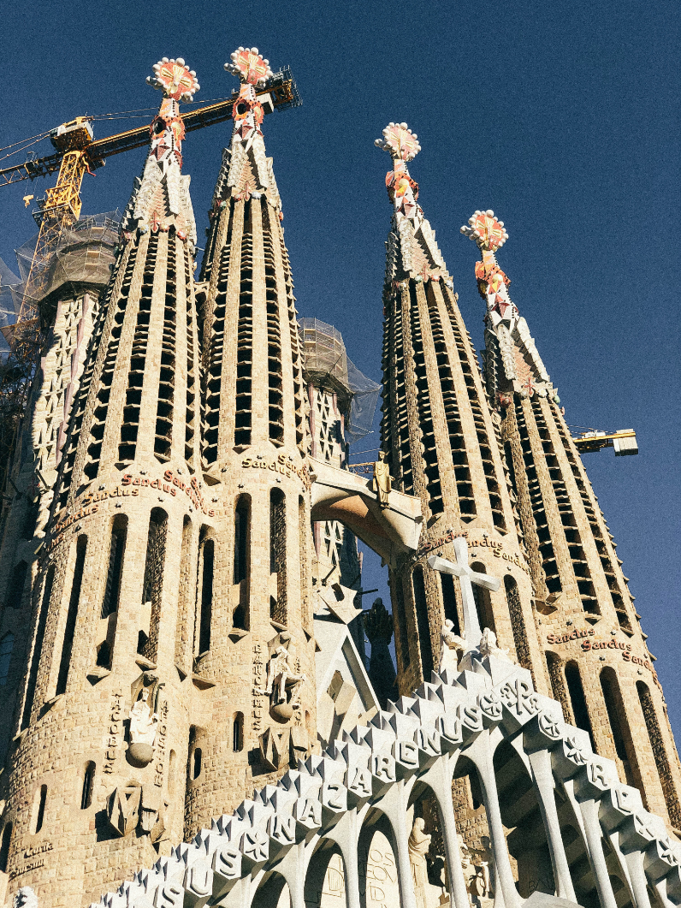
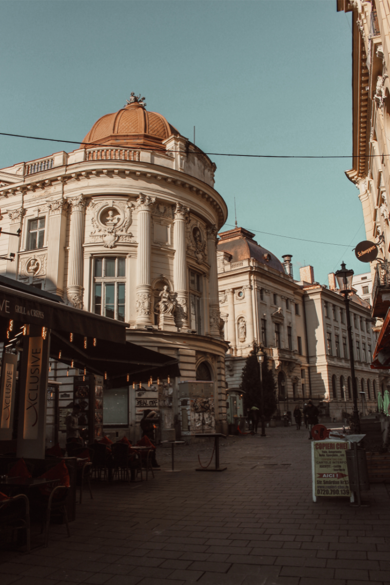
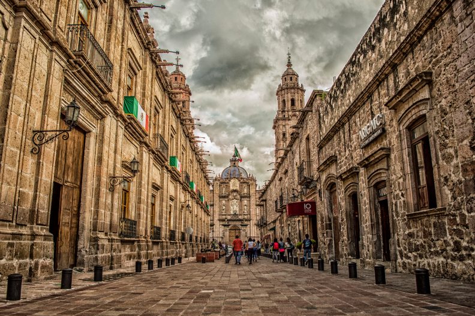
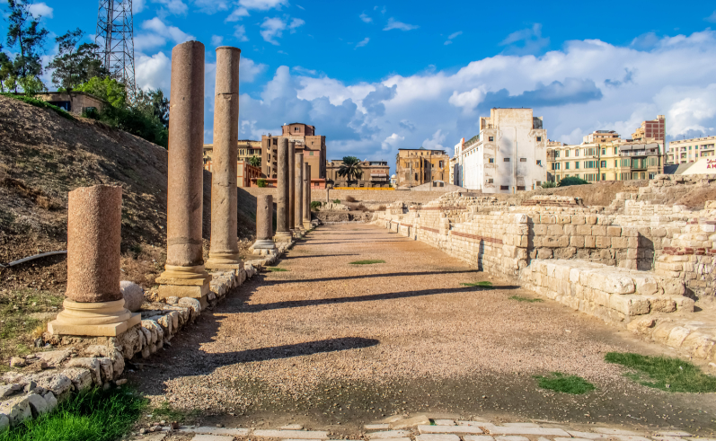

Attraverso l'obiettivo della mia macchina fotografica, ho immortalato la
maestosità senza tempo della Sagrada Familia, un capolavoro architettonico che incanta e sorprende
in ogni suo dettaglio. Le ardite guglie e le intricate facciate si ergono verso il cielo con una
grandiosità quasi divina, mentre la luce del sole danza sulle sue forme uniche, creando giochi di
ombre e luci che accentuano la sua bellezza senza tempo. In questa foto, catturata in un momento di
quiete e contemplazione, la Sagrada Familia si presenta come un simbolo di speranza e ispirazione,
un'icona eterna che continua a stupire e affascinare chiunque posa gli occhi su di essa.

In questa foto, catturata con maestria lungo le antiche strade di Firenze, si
avverte l'atmosfera intrisa di storia e fascino che permea ogni pietra e ogni angolo di questa città
senza tempo. La strada, fiancheggiata da eleganti palazzi e illuminata dalla luce dorata del
tramonto, racconta storie millenarie di arte, cultura e passione. Il susseguirsi di edifici storici
e balconi fioriti evoca un senso di intimità e calore, mentre il pavimento di ciottoli testimonia
dei secoli di passaggio di persone e storie. In questa immagine, Firenze si mostra nel suo splendore
più autentico, una città che continua a incantare e ispirare con la sua bellezza senza tempo.

Questa suggestiva immagine cattura l'essenza vibrante di una strada
caratteristica della vivace città messicana, con la maestosità di un celebre monumento che si
staglia all'orizzonte. La prospettiva dinamica della strada conduce lo sguardo dello spettatore
lungo un percorso affascinante, mentre la presenza imponente del monumento dona profondità e
significato al panorama urbano. Con una composizione equilibrata e una luce che gioca delicatamente
sulle sfumature dell'ambiente circostante, l'immagine evoca un senso di meraviglia e ammirazione per
la ricca storia e la bellezza architettonica di questa iconica destinazione messicana.

In questa suggestiva immagine, ho catturato un frammento di storia nel cuore
di Pompei, testimone silenzioso di un'epoca lontana che ancora oggi affascina e sorprende. La scena,
intrisa di un'atmosfera antica e misteriosa, rivela i resti di un'antica struttura, testimone del
passato glorioso di questa città romana. Le pietre antiche, consumate dal tempo e dallo scorrere dei
secoli, raccontano storie di vita quotidiana e di tragedia, mentre il sole del Mediterraneo illumina
delicatamente il paesaggio, creando giochi di luce e ombra che accentuano la suggestione del luogo.
In questa foto, Pompei si presenta come un tesoro archeologico che continua a intrigare e a
suscitare emozioni, un luogo che ci ricorda la fragilità della vita e la potenza indelebile della
storia.